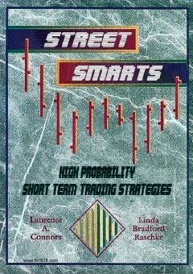

SSTreyderlar uchun amaliy bozor strategiyalari va xavfni boshqarish bo'yicha qo'llanma.
Ushbu kitob treyderlar uchun amaliy qo'llanma bo'lib, bozorlardagi qisqa muddatli narx harakatlaridan foyda olish strategiyalarini o'z ichiga oladi. Mualliflar xavfni boshqarish, aniq kirish nuqtalarini aniqlash va bozor psixologiyasini tushunish bo'yicha o'z tajribalari bilan o'rtoqlashadilar.